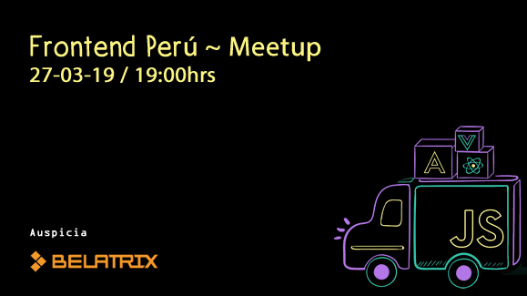

#front.pe
Progressive Web Apps & Workbox
My vision
Web Power vs Mobile apps
Google Wave/Docs - iOSWhy Jobs, Why!?
Web App
- Practicity/Availability
- Installation
- Storage Space
Give power to the web

Yes, marvel fans, it's the infinity power stone

Technology


Installable - App Like


Reliability

Faster

Engaging

But, what we need to implement it?
- Manifest
- Chrome Dev Tools
- Lighthouse
- Service Workers
- Workbox
- Cache API
- Web Storage API
- HTTPS
Manifest

Chrome Dev Tools

Web Cache/Storage API

Why Service Worker it's important?
What's a service worker?

Register SW
if ('serviceWorker' in navigator) {
window.addEventListener('load', function() {
navigator.serviceWorker.register('/sw.js').then(function(registration) {
// Registration was successful
console.log('ServiceWorker registration successful with scope: ', registration.scope);
}).catch(function(err) {
// registration failed :(
console.log('ServiceWorker registration failed: ', err);
});
});
}
Install SW
var CACHE_NAME = 'my-site-cache-v1';
var urlsToCache = [
'/',
'/styles/main.css',
'/script/main.js'
];
self.addEventListener('install', function(event) {
// Perform install steps
event.waitUntil(
caches.open(CACHE_NAME)
.then(function(cache) {
console.log('Opened cache');
return cache.addAll(urlsToCache);
})
);
});
Request and response from cache
self.addEventListener('fetch', function(event) {
event.respondWith(
caches.match(event.request)
.then(function(response) {
// Cache hit - return response
if (response) {
return response;
}
return fetch(event.request);
}
)
);
});
self.addEventListener('fetch', function(event) {
event.respondWith(
caches.match(event.request)
.then(function(response) {
// Cache hit - return response
if (response) {
return response;
}
// IMPORTANT: Clone the request
var fetchRequest = event.request.clone();
return fetch(fetchRequest).then(
function(response) {
// Check if we received a valid response
if(!response || response.status !== 200 || response.type !== 'basic') {
return response;
}
// IMPORTANT: Clone the response. A response is a stream
// and because we want the browser to consume the response
// as well as the cache consuming the response, we need
// to clone it so we have two streams.
var responseToCache = response.clone();
caches.open(CACHE_NAME)
.then(function(cache) {
cache.put(event.request, responseToCache);
});
return response;
}
);
})
);
});
And what happens if I wanna do something like this ...

workbox.routing.registerRoute(
/\.(?:js|css)$/,
workbox.strategies.staleWhileRevalidate(),
)
Features
- Pre-caching
- Expiration
- Strategies
- Recipes
- Background Sync
Strategies
Cache-First

Network-First

Stale-while-revalidate
Network-Only / Cache-Only
Lighthouse

Audit

Google Web dev

PWA Pros
- Only have to build and maintain one app
- Uses the same technologies that web developers already use
- PWA are rapidly improving
- It’s based on maintaining the open web and uses standards-based technologies
PWA Cons
- iOS not supported - WIP 12.0
- Uses the same technologies that web developers already use
- Doesn’t have a presence in the App Store
- It doesn’t support all OTT options like streaming devices
Exciting news
- Google Play Store and Microsoft Store are open for PWA
- Google adds fingerprint support to Chrome
- Chrome is adding support to fingerprint auth

Gracias!
Preguntas y comentarios
| Github | http://github.com/jeanpaul1304 |
| Diapositivas | http://jeanpaul1304.github.io/pwa-expo |
front.pe